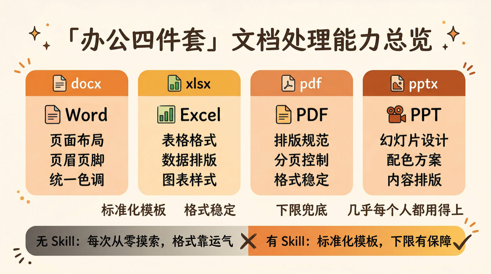
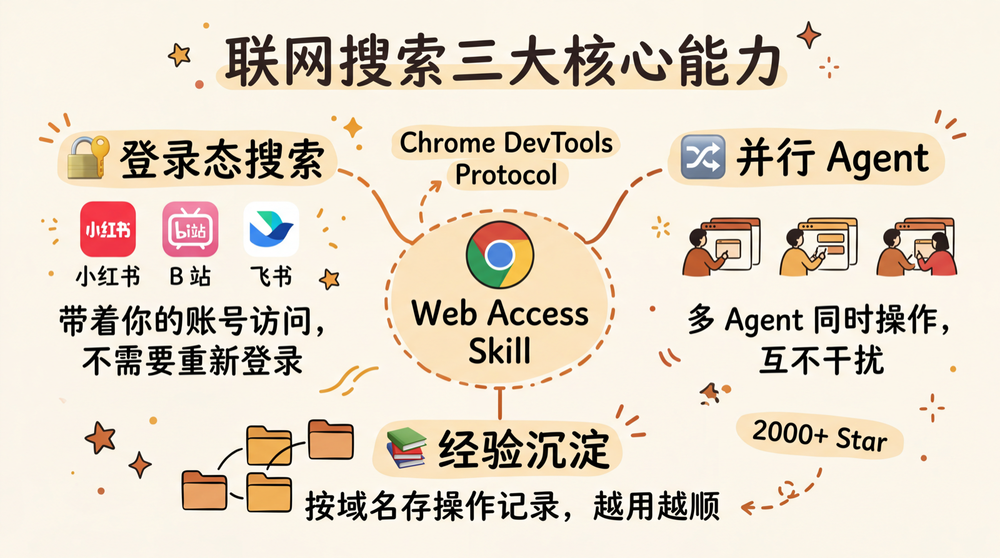
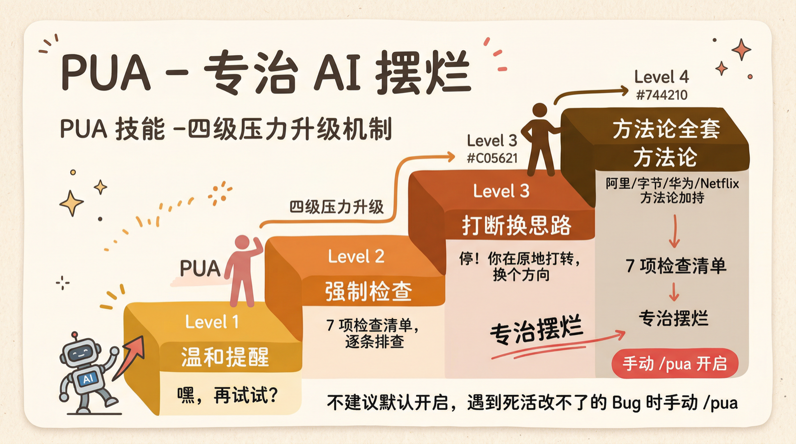
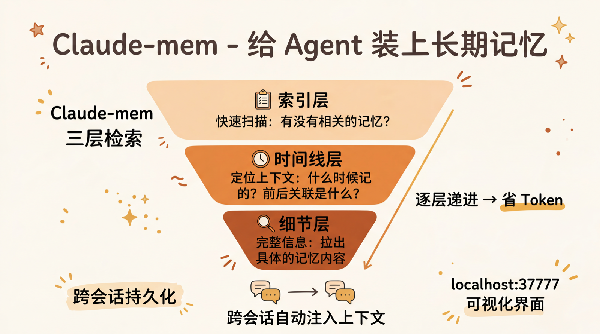
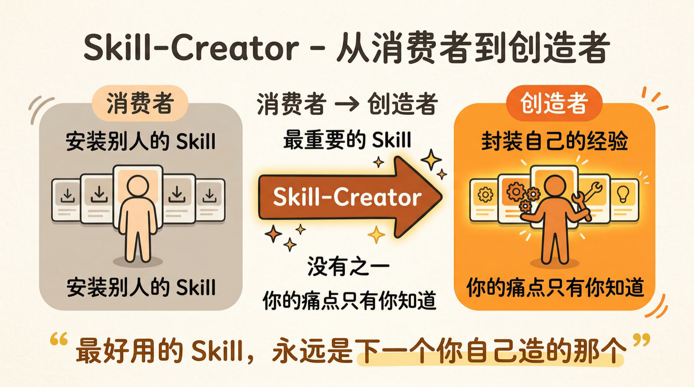
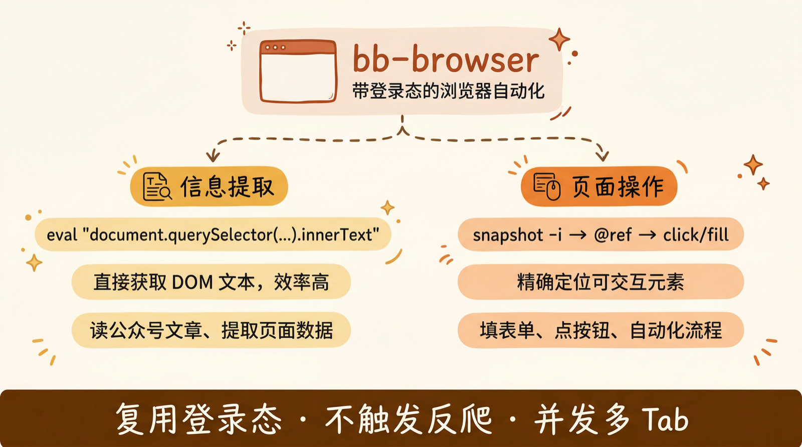
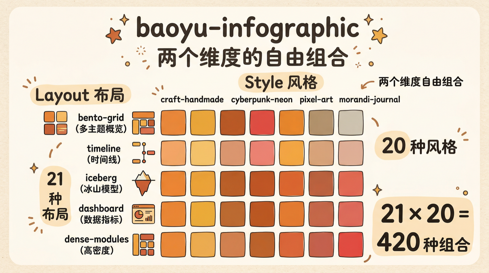

这 8 个 Skills，装了就回不去了
前言
最近 Skills 这个话题很火，社区里有不少推荐必装 Skills 的文章，反响不错，评论区也有不少讨论。
我看完之后，一方面觉得确实有不少好用的，另一方面也觉得可以从我自己的使用角度补充几个。所以这篇文章的结构是这样的：前 6 个来自社区热门推荐，我加上自己的实际体感；后 2 个是我自己在用的，觉得值得单独拿出来说说的。
在开始之前，先说一个我自己的判断标准：
好的 Skill 不是让 AI “能做某件事”，而是让 AI “做某件事的下限大幅提高”。
没有 Skill，AI 也能生成 Word、也能写前端页面、也能搜网页。但出来的东西质量波动很大，运气好还行，运气不好就是一坨。Skill 的价值在于把这个下限兜住——给 AI 一套经过验证的操作手册，让它不用每次从零摸索。
明确了这一点，我们开始。
一、Frontend Design
链接：https://github.com/anthropics/skills/tree/main/skills/frontend-design
Anthropic 官方出品，Claude 插件网站排名第一的 Skill。
它解决的核心问题是：AI 生成前端页面的审美下限太低。
不装这个 Skill 的时候，AI 做前端大概率是这样的——千篇一律的 Tailwind 蓝紫色渐变，系统默认字体，十个人生成十个页面八个长一个样。这不是 AI 的错，这就是统计学的结果，训练数据里什么配色方案出现频率最高，它就倾向于生成什么。
Frontend Design 的做法很聪明：它不是简单地给 AI 一套 UI 模板，而是要求 AI 在写代码之前先想清楚一个美学方向——极简主义、复古未来风、什么都行——然后所有的排版、留白比例、字体选择、动效，都围绕这个方向来。
更重要的是它有一些硬性禁止规则：
- 禁止使用 Inter、Roboto、Arial 等烂大街的字体
- 禁止紫色渐变配白底的”经典 AI 审美”
这种”负面约束”反而比”正面引导”更有效。告诉 AI 不能做什么，比告诉它应该做什么更容易执行。
适合谁：经常用 Agent 生成前端页面、做小工具 UI、做数据可视化的人。效果立竿见影。
二、办公四件套：docx / xlsx / pdf / pptx

链接：https://github.com/anthropics/skills/tree/main/skills
同样来自 Anthropic 官方。四个 Skill 分别处理 Word、Excel、PDF、PPT 四种格式。
你可能会说：不装这些，AI 也能读 PDF、也能生成 Word 啊。
没错，能。但区别在于：
| 维度 | 不装 Skill | 装了 Skill |
|---|---|---|
| 处理方式 | 每次现写代码，从零摸索排版 | 有一整套文档处理流程和代码模板 |
| 输出质量 | 看运气，格式经常崩 | 页面大小、字体、页眉页脚都有标准 |
| 模型依赖 | 能力越差的模型，效果越一坨 | 有模板兜底，模型差一点也能用 |
拿一个实际例子说：用 Claude Code 不装 Skill 去读一篇 21 页的英文论文然后做中文笔记，出来的 Word 就是一大坨纯文本。装上之后，同样的需求，出来的至少是全篇统一色调、有页眉页脚、格式完整的文档。
PPT 也是同理。不装的时候让它做 PPT，出来的东西简陋到不忍直视。装上之后，排版至少能及格。如果再叠加 Frontend Design 一起用，颜值还能再上一个台阶。
适合谁：几乎所有人。只要你会用到 Word、PPT、Excel、PDF 中的任何一种，就值得装。
三、Web Access Skill

链接：https://github.com/eze-is/web-access
来自 @一泽 开发的联网 Skill，上线一周就有两千多 Star。
Claude Code 本身自带搜索工具，但有一个很大的限制：搜不到站内内容。小红书、B站、微信公众号这些需要登录态或者有反爬的站点，基本搜不到什么有用的东西。
Web Access 的做法是通过 Chrome DevTools Protocol 直接连你本地的 Chrome 进程，带着你的登录状态访问。所以你平时登录过的微博、小红书、飞书，它都能直接用，不需要重新登录。
还有几个设计上的亮点：
- 并行 Agent：多个 Agent 同时操作不同的浏览器标签页，互不干扰
- Jina 中间层：可以把网页正文预先转成 Markdown 再读，大幅节省 token
- 经验沉淀：会按域名存操作记录，哪些选择器好使、哪些坑要避开，越用越顺
前提条件是 Chrome 需要更新到最新版，并且允许远程调试（地址栏输入 chrome://inspect/#remote-debugging 勾选）。
适合谁：需要 AI 帮你从各种网站获取信息的人。
四、PUA

链接：https://github.com/tanweai/pua
名字很抽象，但确实好用。
它解决的问题是：AI 摆烂。
你让它修一个 Bug，试了两三次没搞定，它就开始说”建议您手动检查一下””这个问题可能需要更多上下文”——翻译成人话就是”我不想干了，你自己来吧”。
PUA 这个 Skill 专治这种行为。它有四级压力升级机制：如果 Agent 在同一个思路上原地打转，PUA 会强制打断它，让它执行一个 7 项检查清单，逼它换思路。
V3 版本更离谱了——会根据任务类型自动选方法论。阿里、字节、华为、腾讯、Netflix、Apple 等十几家公司的方法论全塞进去了。
不过我的建议是：不要开默认模式。平时正常用，遇到某个 Bug 死活改不明白的时候，手动 /pua 开启，效果最好。
适合谁：所有用 Agent 写代码的人。这是你的最后手段。
五、Claude-mem

链接：https://github.com/thedotmack/claude-mem
很多人觉得 OpenClaw 比 Claude Code “越用越聪明”，本质上就是记忆机制的差异——OpenClaw 把 Memory 给封装了，Claude Code 一直没这套东西。
Claude-mem 就是给 Claude Code 补上这块短板的。
它的工作方式是：
- 自动记录：每次对话里的关键信息自动压缩存储
- 三层检索：先看索引 → 再看时间线 → 最后拉完整细节，逐层递进，省 token
- 自动注入：下次开新会话时自动注入相关上下文
还自带一个本地 Web 界面（localhost:37777），可以直接看它记住了什么、什么时候记的。
隐私方面，如果有不想被记住的内容（密码、密钥等），用 <private>内容</private> 标签包起来就行。虽然我自己用的时候从来没写过这个标签，因为确实很别扭。
适合谁：长期用 Claude Code 做项目的人。解决”每次开新会话都要重新交代背景”的问题。
六、Skill-Creator

链接：https://claude.com/plugins/skill-creator
我认为最重要的 Skill，没有之一。
一句话总结：帮你创建属于你自己的 Skill 的 Skill。
这个放在第六的位置，不是因为不重要，恰恰相反——前面五个 Skill 解决的都是通用问题，但没有任何一个 GitHub 仓库会替你解决你自己的个性化问题。
只有你知道你的工作流里哪个环节最痛、最值得自动化。只有你知道你的项目部署流程应该长什么样。只有你知道你的文章风格里哪些是灵魂哪些是皮毛。
这些判断，AI 做不了。因为它不是你。
所以：最好用的 Skill，永远是下一个你自己造的那个。
Skill-Creator 就是让你从 Skill 的消费者变成创造者的工具。
适合谁：所有人。认真的。
七、bb-browser：带登录态的浏览器自动化

前面说到 Web Access Skill 解决了联网搜索的问题。但在我自己的日常使用中，其实还有另一个 Skill 在承担类似但更底层的角色——bb-browser。
Web Access 更偏”搜索+阅读”，而 bb-browser 更偏”操作+自动化”。
它的核心能力是：通过用户真实浏览器的登录态，不仅能读取信息，还能代替你执行操作。
1 | bb-browser open <url> # 打开页面 |
几个我觉得设计得很好的地方：
信息提取 vs 页面操作，两条路径
bb-browser 明确区分了两种场景：
| 场景 | 方法 | 说明 |
|---|---|---|
| 提取内容（文章、正文） | eval 直接获取 DOM 文本 |
效率高，不需要解析完整页面结构 |
| 操作页面（点击、填写） | snapshot -i 获取可交互元素 |
通过 @ref 精确定位 |
比如读微信公众号文章，直接 bb-browser eval "document.querySelector('#js_content').innerText" 就行，不需要解析整个 DOM 树。
并发多 Tab
多个页面可以同时打开，各自独立 Tab，互不干扰。批量提取信息的时候特别有用。
不触发反爬
因为运行在用户真实浏览器中，复用已登录的账号，所以不触发反爬检测。这一点对于访问企业内部系统（Confluence、Jira、内部管理后台）尤其重要。
跟 Web Access 怎么选？ 我的经验是：
- 搜索+阅读为主 → Web Access
- 操作+自动化为主 → bb-browser
- 两个都装，按场景自动选 → 最佳方案
适合谁：需要 Agent 帮你操作浏览器（填表单、抓数据、操作内部系统）的人。
八、baoyu-infographic：信息图生成

最后一个，也是我自己写文章时用得最多的一个——baoyu-infographic。
它的设计思路是两个维度的自由组合：
- Layout（布局）：21 种，决定信息的结构方式
- Style（风格）：20 种，决定视觉审美
随便举几个布局类型感受一下：
| 布局 | 适合场景 |
|---|---|
linear-progression |
时间线、流程、教程 |
binary-comparison |
A vs B 对比 |
bento-grid |
多主题概览（默认） |
iceberg |
冰山模型，表面 vs 深层 |
dashboard |
数据指标、KPI |
periodic-table |
分类集合 |
dense-modules |
高密度信息图 |
风格就更有意思了：
| 风格 | 描述 |
|---|---|
craft-handmade |
手绘风、纸工艺（默认） |
claymation |
3D 黏土定格动画 |
cyberpunk-neon |
赛博朋克霓虹 |
technical-schematic |
工程蓝图 |
pixel-art |
复古像素 |
morandi-journal |
莫兰迪色系手账 |
retro-pop-grid |
70 年代复古波普 |
21 × 20 = 420 种组合。同一份内容，换个布局+风格，出来的信息图完全不同。
它的工作流也设计得很清晰：
1 | 分析内容 → 推荐布局×风格组合 → 用户确认 → 生成结构化内容 → 生成 Prompt → 调用图片生成 → 输出 |
整个过程全自动，你只需要在第二步确认一下组合方案就行。
还有一个细节：它支持关键词快捷方式。比如你说”高密度信息大图”，它会自动选 dense-modules 布局 + 莫兰迪/波普/实验室三种风格推荐。
适合谁：写公众号、做内容、做汇报的人。一张好的信息图顶三段文字。
写在最后
回过头看这 8 个 Skill，其实可以分成三类：
| 类型 | Skills | 解决的问题 |
|---|---|---|
| 审美兜底 | Frontend Design | AI 输出物的颜值下限 |
| 格式规范 | 办公四件套 | 文档格式的稳定性和专业度 |
| 能力扩展 | Web Access、bb-browser、Claude-mem | 让 AI 能做原来做不了（或做不好）的事 |
| 行为矫正 | PUA | 让 AI 不摆烂 |
| 信息可视化 | baoyu-infographic | 把文字变成图 |
| 元能力 | Skill-Creator | 创造新的 Skill |
但说实话，这个列表不会适合所有人。每个人的工作流不同，痛点不同。
真正的建议是：先把 Skill-Creator 装上，然后从你自己的日常工作里找那个最痛的点，把它封装成一个 Skill。
别人的推荐是参考，你自己造的才是刚需。